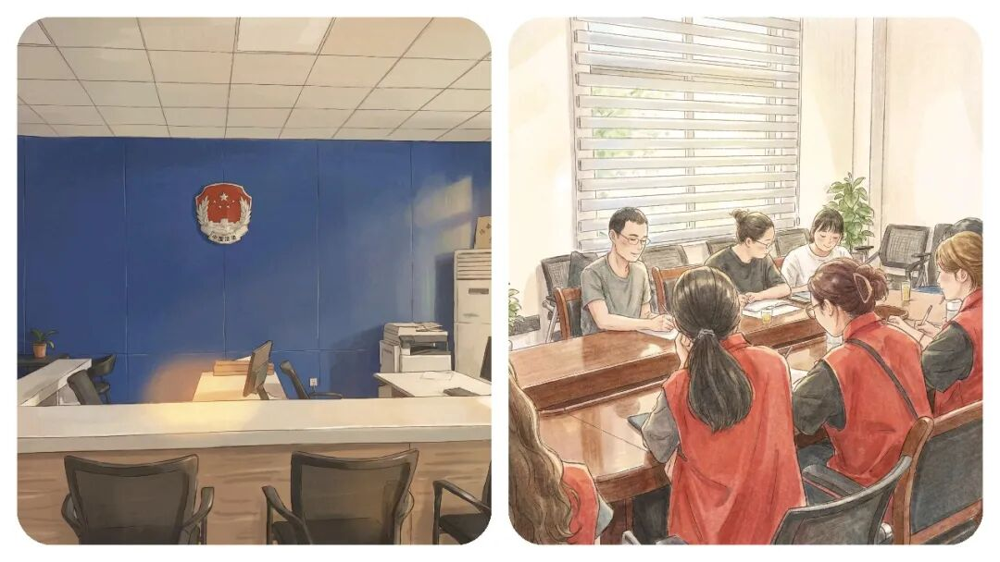
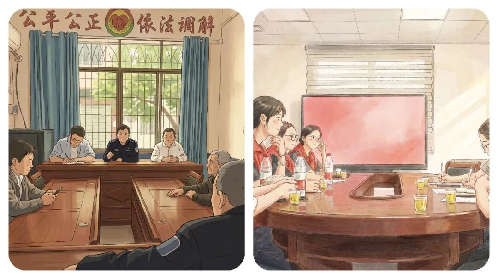
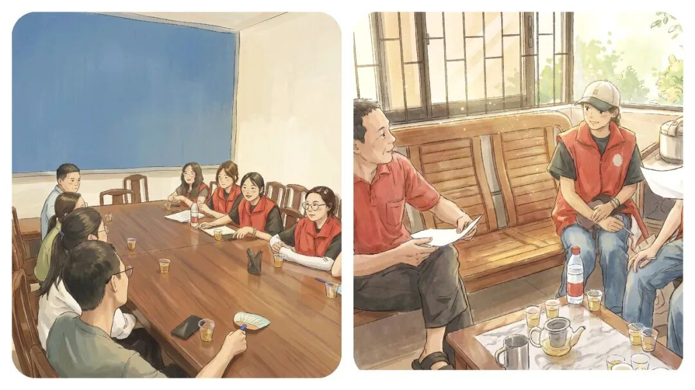

你知道，在乡镇哪个“岗位性价比”更高吗？聊聊这 2 个含金量最高的乡镇副职

点击上方蓝字关注我们






1.例如纪委书记虽工作性质特殊，但对提升业务能力意义重大；
2.又像武装部长，虽然主要负责征兵、民兵等事务，但实际工作中多兼顾防汛防火应急工作任务，同样能锻炼综合协调能力，可以为未来在其他领域发展打下基础。
多一个点在看
多一条小鱼干
点击上方蓝字关注我们



多一个点在看
多一条小鱼干